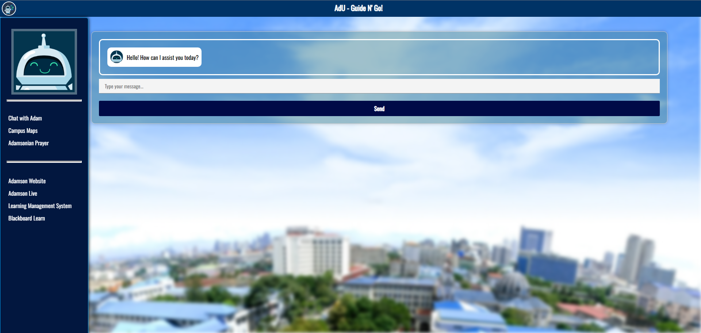

Code Projects
A curated list of my development work. Layout matches the site theme and uses a simple horizontal slider: 1 card on mobile, 3 cards on desktop.
Main Projects
My main set of projects
-
Project Alpha
Full‑stack app with auth, API, and responsive UI.
-
Project Beta
Interactive dashboard with charts and filters.
-

AdU - Guide N' GO
Created as an output for our thesis; A chatbot system that provides answers to frequently asked questions about the university via Forward Neural Networks and Levenshtein Distance Algorithm as its fallback. It uses the univeristy's handbook as its training data.
NOTE: In this demo, the training data is not included due to privacy concerns. For an actual demo, please contact me. -
Project Delta
Extra item to demo the slider navigation.
Basic Projects
Projects for learning and practice; small utilities and experiments.
WordPress Projects
Client and personal sites built with WordPress and custom themes.
Use the left and right buttons to navigate each row. Cards auto-resize: one per view on mobile, three on desktop. Add or remove projects by inserting more <li> items inside the track.